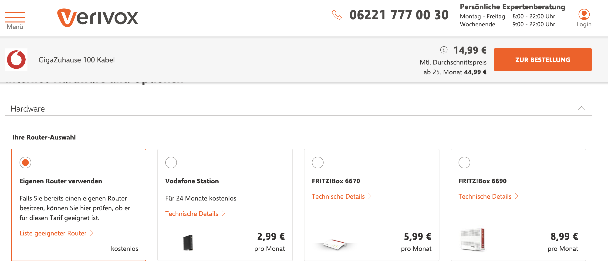

Verivox: Filling the Info Gap
Small improvements, big trust. Incremental UX changes that solved a real customer pain point.
The Opportunity
Through user interviews, in-page feedback, and funnel analysis across multiple steps of the journey, we found that many customers abandoned the contract sign-up process. The underlying issue was a lack of clear, accessible information. Customers were left uncertain about key aspects — such as which router to choose, who handles the contract cancellation, and what the next steps would be. We summarized this recurring pain point as “The Info Gap.”
The Hypothesis
If we reduce information ambiguity at key moments in the funnel, we can increase confidence and improve conversion through clearer, better-timed guidance.
My Role
As Product Manager, I led discovery with our UX and Research teams, prioritized ideas based on impact/effort, and worked with developers to implement fast, testable changes. I was also responsible for the experiment set-up and post-test analysis.
Who We Designed For
👩⚖️ Analytical Anja
Anja dives deep, compares meticulously, and doesn’t mind spending extra for something that feels right. She's skeptical of biased advice and wants confidence before making a move.
🧐 Clockwork Christian
Christian is structured, straightforward, and efficiency-driven. He’s not looking for flash — just clarity, speed, and simplicity. If a product respects his time, he’ll respect it back.
Experiments & Outcomes
- Adding Router Traits: +3.38% relative conversion increase
- Next Steps in Offer Page: +1.98% relative conversion increase
- FAQ CTA test: +23% engagement on help content
- Some tests failed — It helped us cut scope and focus on real pain points
Adding Router Traits
To support users with low technical affinity, we replaced complex router specs with intuitive traits: Number of people, Home size, and Internet usage. These were derived from user interviews and made manageable for our Data Management team via PIM integration.


🧪 Experiment Result: A/B testing showed a conversion uplift of +3.38%. Clear, simple language helped customers feel confident about their choice.
🤝 This was a collaborative effort with our Data Management team, ensuring the traits were scalable and maintainable across the catalog.
Key Takeaways
Not every feature has to be flashy. Small, insight-led improvements—especially when focused on trust and clarity—can drive real results. Product work is often about removing friction, not adding bells and whistles.